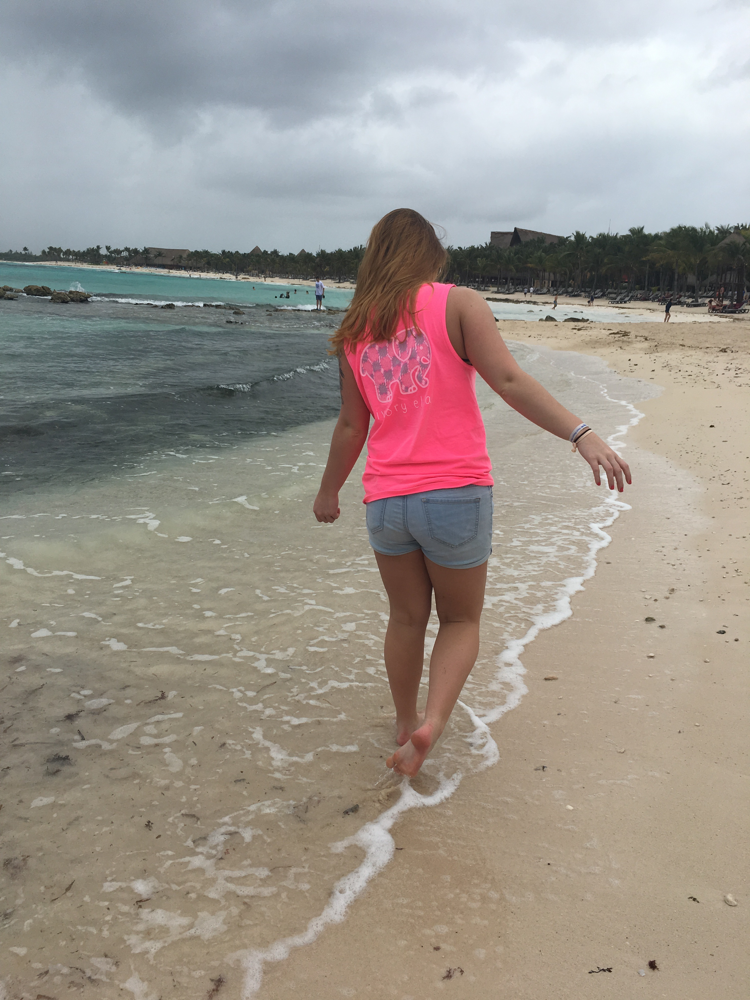
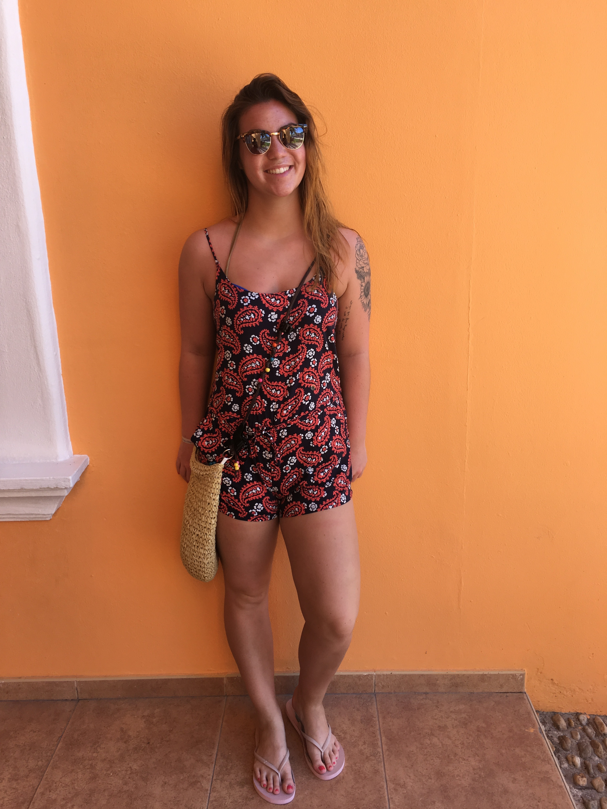
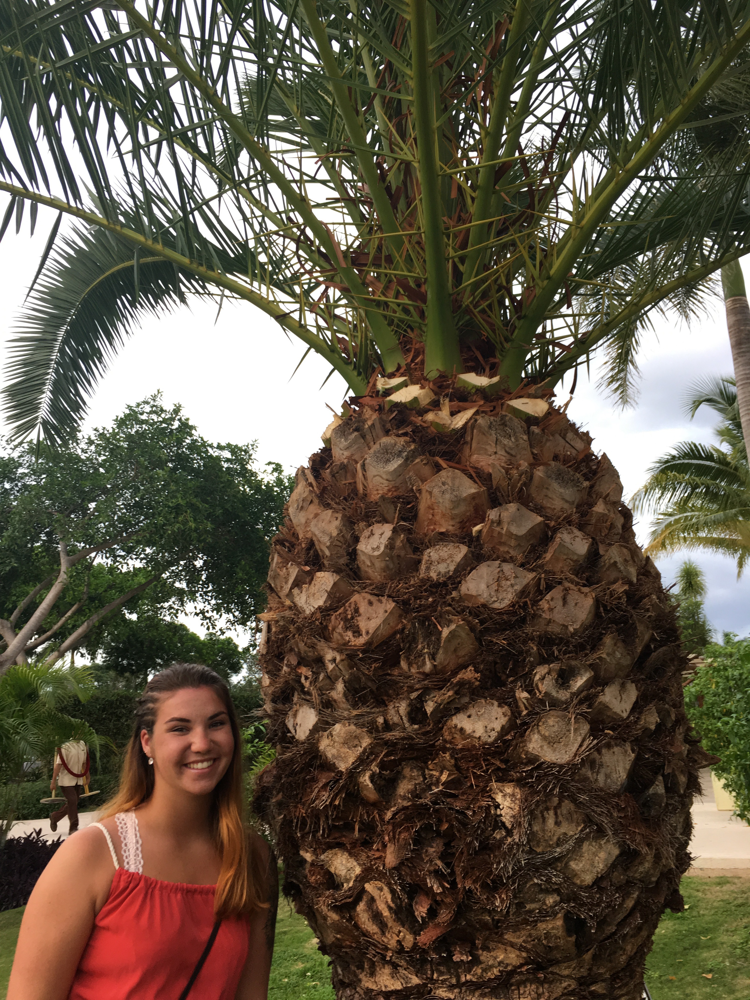

I have been to mexico three times, once for my 16th birthday, and for Spring break my freshman and sophomore years.
My family has a time share in Mexico at the Barcelo Maya Palace Deluxe, which is why I have been there three times. Some of my favorite things to do in Mexico is go snorkeling, right on the beach of our resort, Zumba, and parasailing! There is so much to do at the resort we stay at, but you can also just hang out on the beach or go swimming in the pool.
  